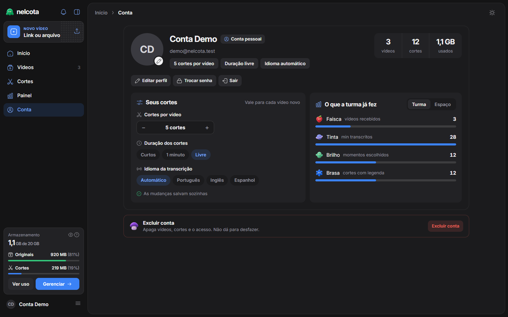
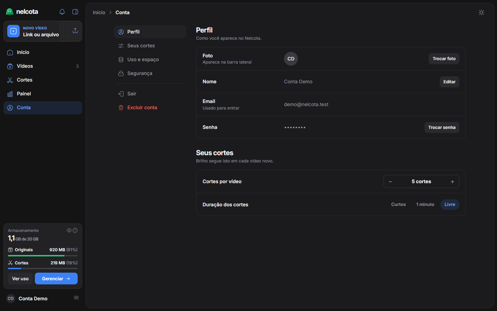
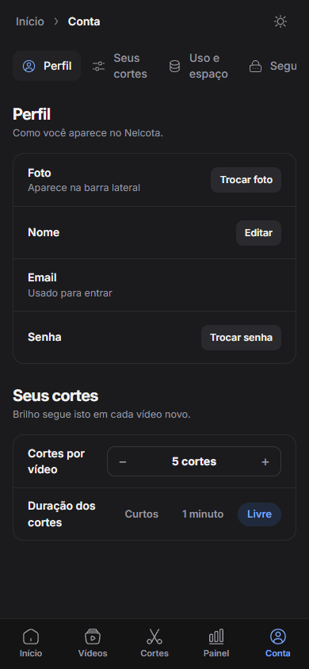
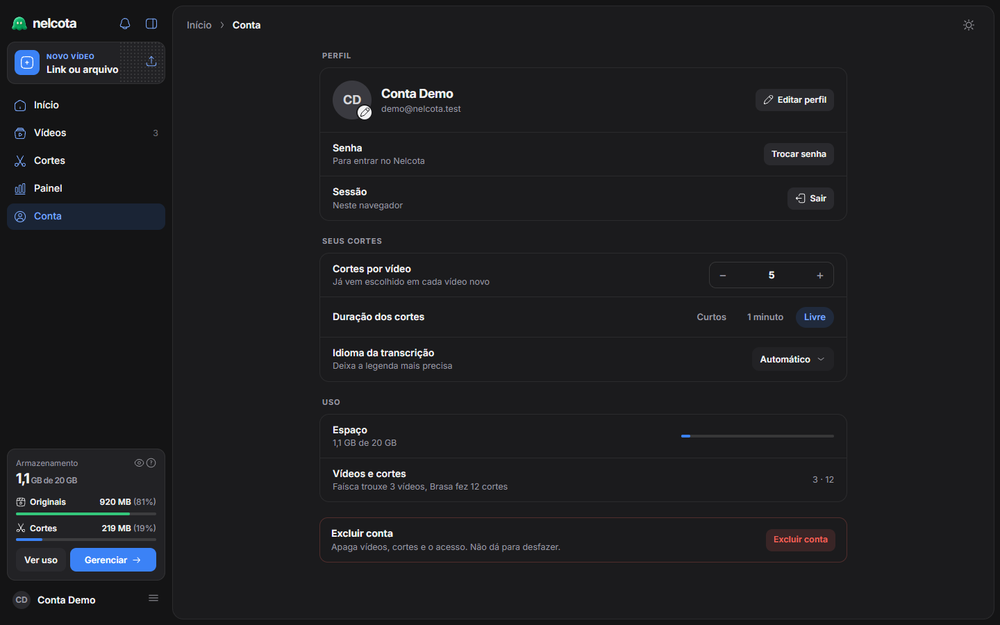
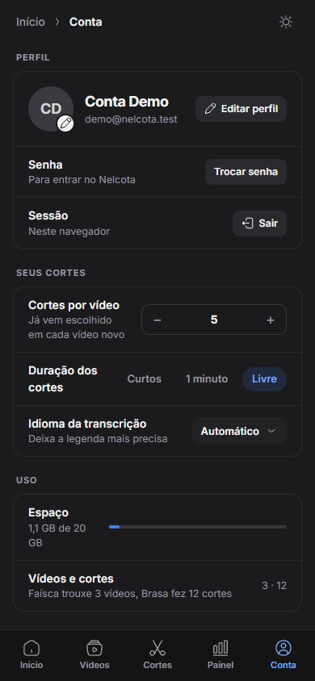
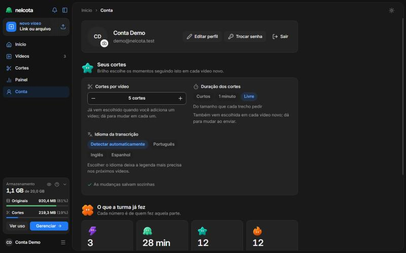
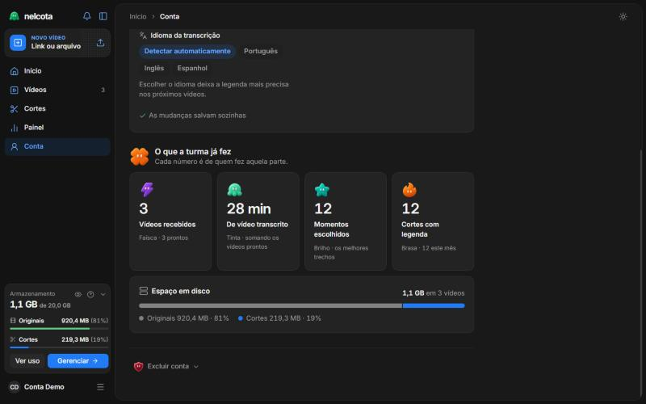

Hoje a Conta é uma coluna estreita de blocos soltos. As três direções usam o visual novo do app (escuro, azul, Inter) e mantêm tudo o que a tela faz: foto, nome, senha, sair, preferências dos cortes (quantidade, duração, idioma), o que a turma já fez, espaço e excluir conta.
Igual ao cartão de criador da referência: foto grande, nome com etiqueta, email, as preferências em resumo e os números ao lado (vídeos, cortes, espaço). Embaixo, duas caixas: "Seus cortes" para ajustar e "O que a turma já fez" com barras e as abas Turma e Espaço. Excluir conta fica separado, em vermelho.

Um menu dentro da página (Perfil, Seus cortes, Uso e espaço, Segurança, Sair, Excluir conta) e, ao lado, linhas com rótulo, valor e botão. Cada assunto no seu lugar, como as configurações de um sistema.


Uma coluna só, com grupos (Perfil, Seus cortes, Uso) em linhas: o nome à esquerda e o controle à direita. Tudo numa tela, sem cliques extras.



